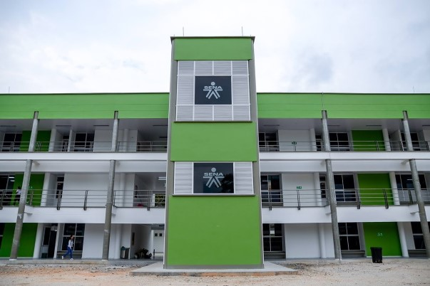

- 


Brindamos acciones de capacitación que permiten la actualización o el desarrollo de competencias y responden a demandas específicas del sector productivo, con el fin de actualizar el talento humano vinculado a una actividad económica que requiera cualificar su desempeño actual o prepararse para asumir nuevos desempeños. Además, la formación complementaria puede realizarse a la medida de sus necesidades y de manera presencial, virtual o mixta.
Formación profesional dirigida a desarrollar y fortalecer las competencias del recurso humano; comprende las actividades de formación, entrenamiento y reentrenamiento en temas específicos. Bajo esta modalidad de formación, el beneficiario recibe un título de técnico, tecnólogo o especialista en algún campo específico.